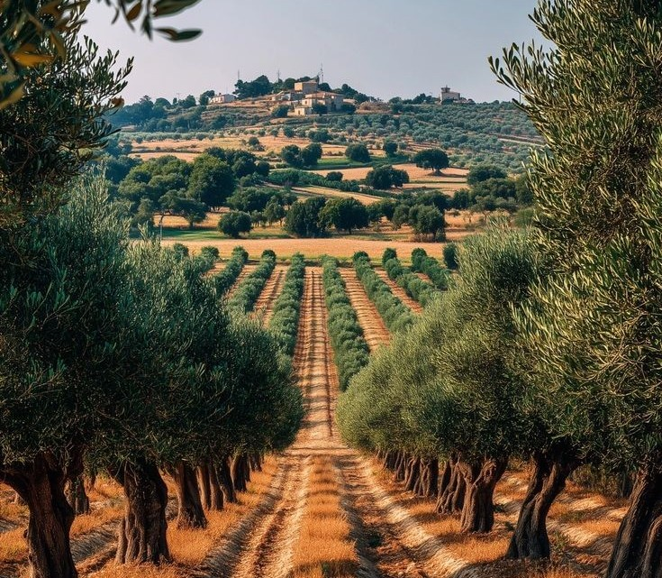
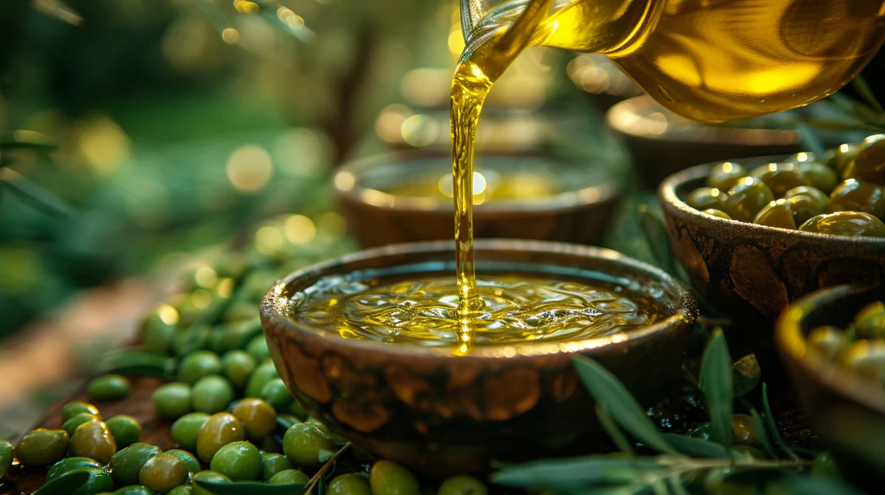
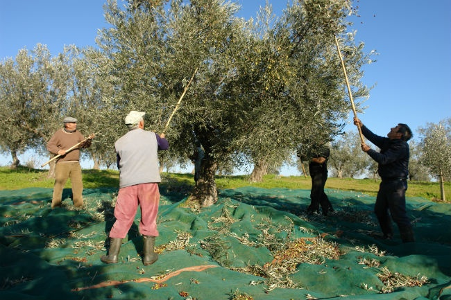
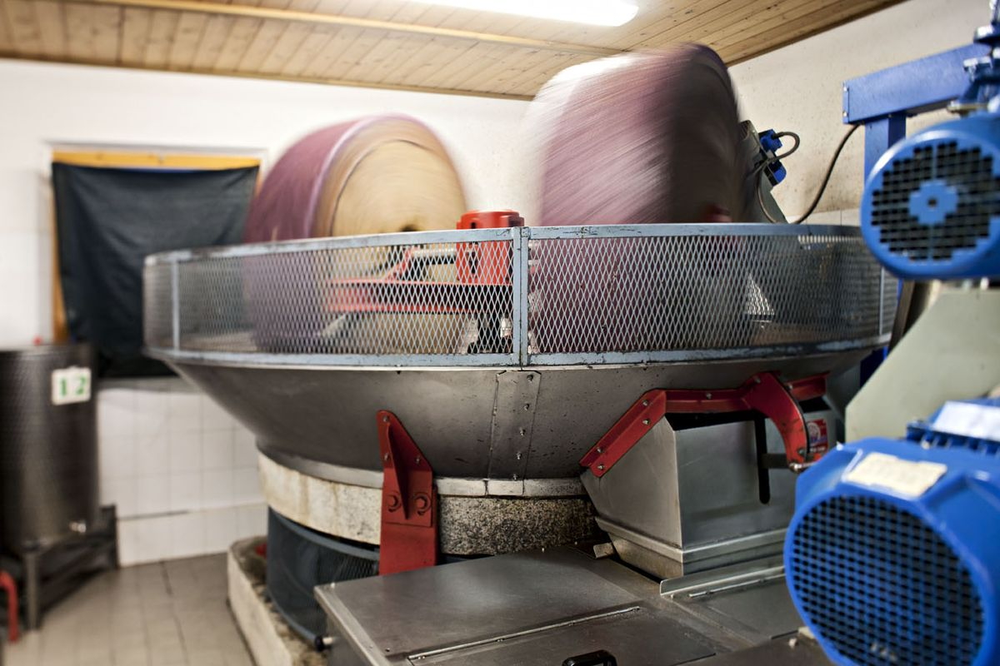
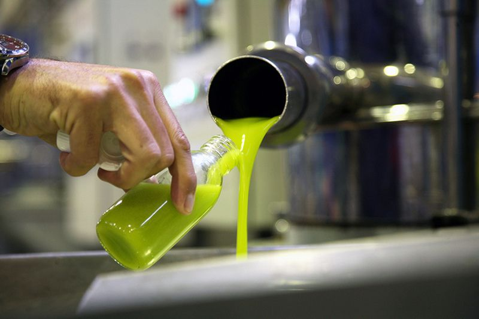

Fermes


"Au cœur de notre domaine, chaque olivier raconte une histoire. Nous cultivons nos terres avec passion pour vous offrir une huiled’olive pure, reflet d’un savoir-faire ancestral et d’un terroir préservé."

Huile d’olive extra vierge, pure et naturelle,issue des meilleures olives du Maroc.
Produits Authentiques
"Au cœur de notre domaine, chaque olivier raconte une histoire. Nous cultivons nos terres avec passion pour vous offrir une huiled’olive pure, reflet d’un savoir-faire ancestral et d’un terroir préservé."

C'est la phase de cueillette du fruit directement de l'arbre.Les olives sont ramassées avec soin, souvent de manière traditionnelle, pour garantir unequalité optimale avant le pressage.

Une fois nettoyées, les olives sont broyéespour être transformées en une pâte homogène. Cette étape permet de libérer l'huile contenue dans les cellules du fruit.

La dernière étape consiste àséparer l'huile de l'eau et des résidus solides. On obtient alors le produitfinal : une huile d'olive pure, prête à être mise en bouteille.